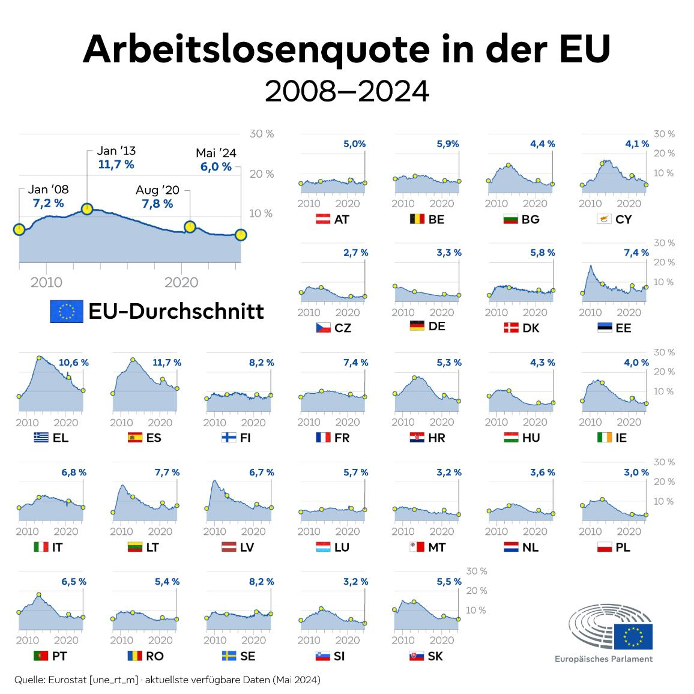

In den vergangenen Jahren hatten wir als Gesellschaft vermehrt neue Wirtschaftskrisen durchstehen müssen, mitunter verursacht durch Corona, den Ukrainekrieg und anderen Krisen, die die Verletzlichkeit unseres Systems deutlich machten.
Herrausfordernd waren:
-
Erhalt von Lebensqualität und Wohlstand
- z.B. durch Inflation und/oder Abbau von Arbeitsplätzen
-
Arbeitslosenquote variiert je nach EU-Land
- vermehrte Jugendarbeitslosigkeit (15% der unter 25 jährigen)

Aber auch die niedrigen Geburtenraten und die alternde Bevölkerung (demographischer Wandel) lassen die Frage aufkommen wie tragfähig das System ist.
- steigende Kosten in z.B. Gesundheits- und Pflegesektor
Ungleichheit zwischen den EU-Ländern:
Nicht alle Staaten sind gleich stark von Krise, Arbeitslosigkeit oder Alterung betroffen, deshalb ist eine einheitliche Lösung schwierig.
Veränderte Arbeitswelt:
Technologischer Wandel, Globalisierung und flexible Arbeitsformen machen neue sozialpolitische Anpassungen nötig.
Mehr zu den Herausforderungen findet ihr unter:
- https://www.sozialpolitik.com/soziales-europa
- https://european-union.europa.eu/priorities-and-actions/actions-topic/employment-and-social-affairs_de
- https://www.europarl.europa.eu/topics/de/article/20170616STO77648/soziales-europa-die-sozialpolitik-der-eu
- https://beobachtungsstelle-gesellschaftspolitik.de/f/f941acf221.pdf
- https://www.bpb.de/themen/arbeit/arbeitsmarktpolitik/327356/arbeitsmarkt-in-europa-zahlen-daten-fakten/